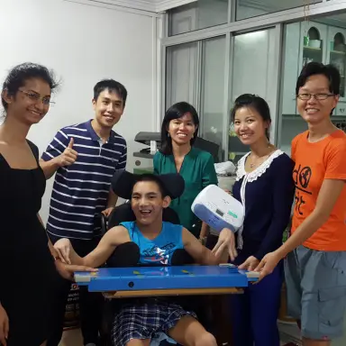
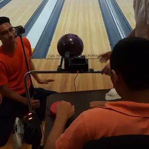
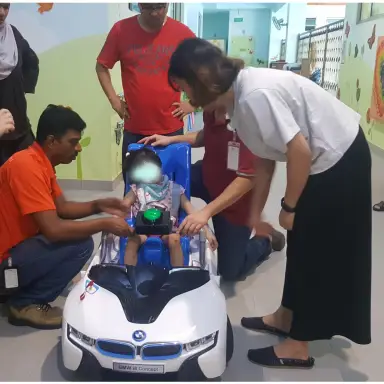
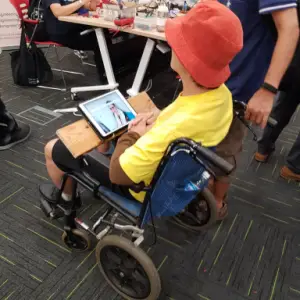
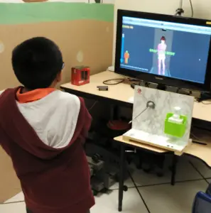
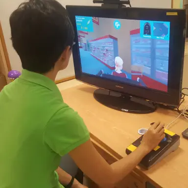

Bespoke Projects
Made with love <3
we make open source assistive devices for pwDs and seniors.
Approximately 3% of Singaporeans live with disabilities, facing challenges in independent living due to limited access to assistive technology. Singapore is also facing a rapidly aging population that is undergoing similar challenges.
Engineering Good partners with over 200 social service organisations, offering assistive technology solutions using readily available materials. Volunteers engage with individuals, develop tailored solutions, and witness the transformative impact of technology on independence and community inclusion.
Flag Raising Project
In partnership with AWWA School, we aim to empower students by giving them the opportunity to raise the flag during morning assembly. This can be a challenging task for students with physical limitations, but cognitively aware. Our volunteer team engineered a solution by motorising the flag-raising process, making it possible with just the push of a button.
Adapted Radio Controller -
Andrew is a social boy who enjoys talking with others, despite his unclear speech. Music is one of his favourite pastimes, but his poor motor skills prevent him from operating a radio. That's why Team TxRx created a customised adapted radio controller just for him. Now, Andrew has the power to enjoy his music.
Adapted Bowling Mechanism
Collaboration with Celebral Palsy Alliance Singapore (CPAS): Individuals with cerebral palsy often face limited recreational options due to accessibility barriers. A volunteer team, Strike Club, has designed an adapted bowling mechanism to help increase these opportunities. This device allows individuals with CP to independently aim and launch a bowling ball down a ramp, allowing for active participation in the game!
GoBabyGo! Singapore
Collaboration with AWWA School: Children with cerebral palsy and other disabilities often struggle to play with commercially available toys and experience mobility issues. GoBabyGo! is a project that transforms battery-powered ride-on cars into rehabilitation tools to help these children explore their surroundings and participate in interactive play. Originating from the University of Delaware, this concept has spread globally and has now reached Singapore. Our team takes off-the-shelf toy cars and customises them to be easy to use and cute, providing children who cannot walk on their own with a new form of mobility. The modifications are made to meet each child's specific abilities and rehabilitation needs, with input from occupational and physical therapists.
Mounting System
Collaboration with Rainbow Centre: For many of us, owning an iPad is a privilege. However, for children like Keaton and Janelle who have special needs, iPads are essential tools that help them communicate, learn, and play. To ensure that these devices are accessible to them, the Iron Man team has created a mounting system to secure iPads to their wheelchairs. Although Keaton and Janelle may be shy at first, they quickly open up when volunteers engage with them. Our hope is that this invention will bring joy and happiness to their lives.
Gamification of ADL
Collaboration with Cerebral Palsy Alliance Singapore (CPAS): Team Funtasktic has teamed up with CPAS to make daily activities more manageable for students with physical impairments. Basic activities of daily living (ADL), such as bathing, brushing teeth, getting dressed, and eating, can be difficult for these students to learn. To help them practice, Funtasktic created a Kinect-based shower game. The goal is to use gamification to provide a safe and enjoyable environment for students to practice the necessary movements involved in these activities.